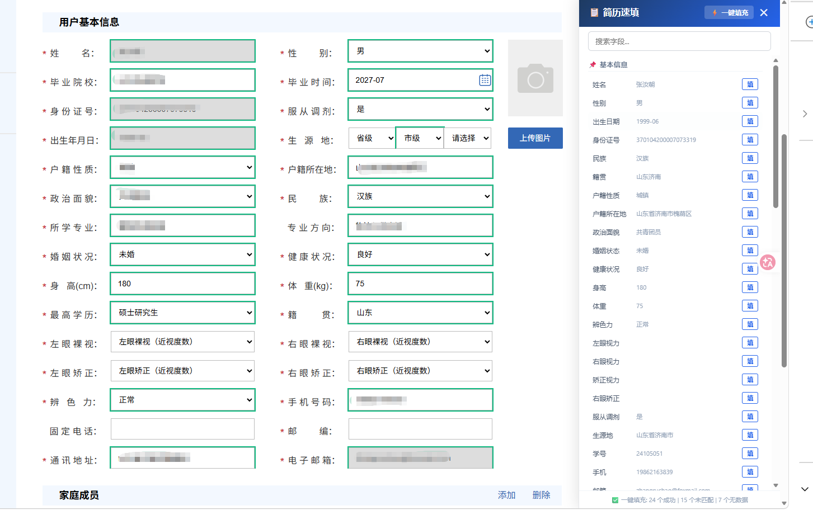

背景
招聘网站表单字段多、页面结构杂，每份网申要手动填 30 分钟以上，且不同平台的表单叫法完全不同（同一字段在不同网站有七八种标签）。核心需求：一个能理解"字段语义"而非只认 id 的通用填表引擎。
方案
- 8 级字段匹配优先级：label 关联 → aria → title → 相邻 td → 同行 td → 表头 th → 父元素文本 → input 属性，层层兜底
- 多 UI 组件库适配：攻克 crec-ui、phoenix-ui、Element UI、Ant Design 等自定义组件，支持级联选择器、地区选择器的程序化填充
- 字段语义归位词典：同一字段在不同网站的不同叫法自动映射，一次配置长期复用
- 数据纯本地：数据存浏览器本地，无任何网络请求，不上传云端
结果
- 单份网申填写从 30 分钟压缩到 3 分钟，多版本数据一键切换
- 覆盖三级级联下拉、家庭成员表格、生源地分段填充等复杂场景
- 源码已脱敏开源（示例数据为虚构人物），可直接安装使用
界面
